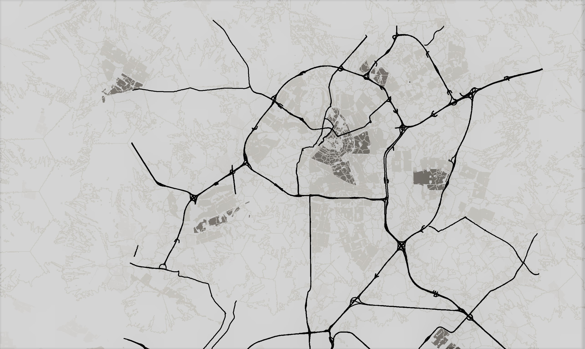

Urban Analytics and City Science
Welcome!
This is the webpage for the Urban Analytics and City Science unit, a core unit for the MSc in Geographic Data Science and Spatial Analytics. This programme is part of the School of Geographical Sciences at the University of Bristol and has been developed by the Quantitative Spatial Science Research Group.
All the unit material can be accessed in .html form from the left-hand side menu. If you want to access the source code please go to the src directory of the GitHub repository.
